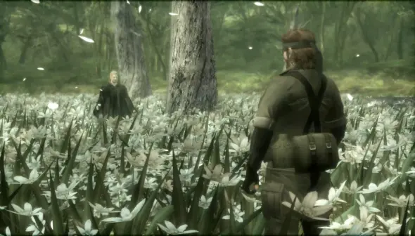

Scegliere i cinque videogiochi più belli di sempre è un esercizio inevitabilmente soggettivo. Ogni titolo importante nella nostra vita videoludica è legato a un momento preciso: un pomeriggio infinito davanti alla TV, una console condivisa con amici o fratelli, la scoperta di mondi che sembravano enormi e reali.
Questa top 5 non nasce quindi da criteri tecnici o classifiche ufficiali, ma da quello che questi giochi hanno lasciato nel tempo.Sono titoli che hanno segnato un’epoca, cambiato il modo di giocare o semplicemente accompagnato intere generazioni.
Alcuni sono capolavori narrativi, altri sono pura giocabilità. Tutti, però, hanno qualcosa in comune: ancora oggi, a distanza di anni, continuano a essere ricordati, citati e rigiocati.
Metal Gear Solid 3 è uno dei capitoli più amati della saga creata da Hideo Kojima, e non a caso. Ambientato durante la Guerra Fredda, racconta una storia intensa e sorprendentemente umana, lontana dagli scenari tecnologici dei capitoli precedenti. Il giocatore veste i panni di Naked Snake, costretto a sopravvivere nella giungla affrontando non solo i nemici, ma anche la fame, la fatica e l’ambiente ostile.
Il sistema di camouflage, la gestione della stamina e il ritmo più lento rendono l’esperienza molto più immersiva. Ma il vero punto di forza è la narrazione: tradimenti, ideali, sacrificio e identità si intrecciano fino a un finale memorabile, capace di lasciare il segno anche a distanza di anni. È un gioco che dimostra come un videogioco possa raccontare una storia profonda senza rinunciare al gameplay.
Crash Bandicoot rappresenta per molti l’infanzia videoludica. Colorato, veloce, apparentemente semplice, ma in realtà molto più impegnativo di quanto sembri. Il gioco propone un platform lineare, con livelli frontali che mettono alla prova riflessi e precisione. Ogni salto deve essere calcolato, ogni cassa rotta con attenzione, soprattutto se si vuole completare il livello al 100%. Crash ha avuto il merito di rendere immediata la sua identità: personaggi caricaturali, musiche orecchiabili e un ritmo incalzante.
Nonostante la sua leggerezza apparente, riesce a creare una sfida vera, capace di frustrare e allo stesso tempo spingere a riprovare. È uno di quei giochi che non hanno bisogno di spiegazioni complesse: lo accendi, giochi e ti diverti. Ed è proprio questa semplicità ben costruita a renderlo intramontabile.
Pro Evolution Soccer non è solo un videogioco di calcio, è un pezzo di storia per chi ama questo sport. Per anni ha rappresentato il punto di riferimento per il gameplay calcistico, grazie a un controllo del pallone realistico e a un ritmo di gioco più ragionato rispetto alla concorrenza. PES ha insegnato a costruire l’azione, a difendere con intelligenza, a leggere le partite. Anche senza licenze ufficiali complete, riusciva a conquistare i giocatori grazie alla profondità del sistema di gioco. Le sfide con gli amici sul divano, i tornei improvvisati, le partite decise all’ultimo minuto fanno parte del suo mito. Pro Evolution Soccer è stato per molti il calcio “vero”, quello che premiava la tecnica e la pazienza più della spettacolarità immediata.
Super Mario Bros è uno dei videogiochi più importanti di sempre, non solo per la sua qualità, ma per il suo impatto storico. Ha definito il genere platform e ha insegnato come costruire livelli perfetti, capaci di guidare il giocatore senza bisogno di tutorial espliciti. Ogni mondo introduce nuove meccaniche, aumentando gradualmente la difficoltà.
Curiosità: Super Mario Bros è stato rilasciato nel 1985 per il Nintendo Entertainment System (NES) e ha venduto oltre 40 milioni di copie in tutto il mondo, diventando uno dei giochi più venduti di tutti i tempi.
Il controllo è preciso, il ritmo perfetto, la curva di apprendimento esemplare. Mario è diventato un’icona globale, riconoscibile anche da chi non ha mai preso in mano un controller. Ancora oggi, a distanza di decenni, Super Mario Bros resta divertente e attuale, dimostrando che una grande idea e una realizzazione impeccabile possono superare qualsiasi limite tecnologico.
Final Fantasy non è un singolo gioco, ma una saga che ha definito il genere JRPG. Ogni capitolo propone una storia diversa, mondi complessi e personaggi memorabili. La serie ha sempre saputo unire narrazione, colonna sonora e gameplay in modo unico. Temi come amicizia, perdita, destino e sacrificio vengono raccontati con una profondità rara per un videogioco.
Il sistema di combattimento a turni, le evoluzioni dei personaggi e l’esplorazione rendono l’esperienza lunga e coinvolgente. Final Fantasy è uno di quei titoli che non si gioca di fretta: richiede tempo, attenzione e partecipazione emotiva. Proprio per questo riesce a lasciare un segno profondo in chi lo affronta, diventando spesso un punto di riferimento personale, non solo videoludico.
Se ti è piaciuto questo articolo, lascia un commento o condividilo con i tuoi amici!